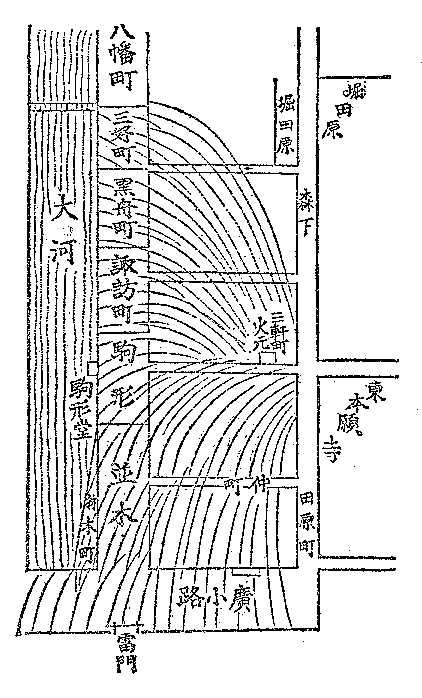

| 幕末維新懐古談 16 その頃の消防夫のことなど | |
| 高村 光雲 | |
| (2012) | |
幕末維新懐古談
その頃の消防夫のことなど
高村光雲
江戸のいわゆる、八百八街には、火消しが、いろは四十八組ありました。
浅草は場末なれど、彼
の新門辰五郎
の持ち場とて、十番のを
組といえば名が売れていました。もっとも、辰五郎は四十八組の頭
の内でも巾の利
く方でした。
いうまでもなく、消防夫
は鳶
といって、梯子
持ち、纏
持ちなどなかなか威勢の好
いものであるが、その頃は竜吐水
という不完全な消火機をもって水を弾
き出すのが関
の山
で、実際に火を消すという働きになると、今日から見ては他愛のない位のものであった。竜吐水の水はやっと大屋根に届く位、それも直接消火
の用を足すというよりは、屋根に登って働いている仕事師の身体を濡らすに用いた位のもの......ゲンバという桶
を棒で担
い、後から炊
き出しの這入
ったれんじゃく
をつけて駆け出した（これは弁当箱で消防夫の食糧が這入っている）。それから、差し子で、猫頭巾
を冠
り、火掛かりする。
火消しの働きは至極迂遠
なものには相違ないが、しかし、器械の手伝いがないだけ、それだけ、仕事師の働きは激しかった。身体を水に浸しながら、鳶口
をもって、屋根の瓦
を剝
ぎ、孔
を穿
ち、其所
から内部に籠
った火の手を外に出すようにと骨を折る。これは火を上へ抜かすので、その頃の唯一の消火手段であった。
で、この消し口を取るということがその組々
の一番大事な役目であって、この事から随分争いを生じたものである。何番の何組がどの消し口を取ったとか、それによって手柄が現われたので、消防夫の功績は一にこれに由
って成績づけられたものです。それで、纏のばれん
は焼けても、消し口を取ると見込みをつけた以上、一寸も其所をば退
かぬといって大層見得なものであった。
消し口を取ると、消
し札
というものをぶら下げた。これは箱根竹に麻糸で結わえた細い木の札で、これが掛かると、その組々の消し口が裏書きされたことになったのです。
その頃は、豪家になると、百両とか、二百両とか懸賞でその家を食い留めさせたものです。こういう時には一層消防夫
の働きが凄
まじかった。
一体に、当時は町人の火事を恐れたことは、今日の人の想像も及ばぬ位である。それは現今の如く、火災保険などいうような方法があるではなく、また消火機関が完全してもいないから、一度類焼したが最後、財産はほとんど丸潰
れになりました。中には丸焼けになったため乞食
にまで身を落とした人さえある。今日では火事があって、かえって財産を殖
やしたなどという話とは反対です。したがって火事といえば直ぐに手伝いに駆け附けた。生命の次ほど大変なことに思っていたこと故、見舞いに走
せ附けた人たちをば非常にまた悦
んだものである。
ですから、火事見舞いは、当時の義理のテッペンでした。一番に駆けつけたは誰、二番は誰と、真先をかけた人を非常に有難く思い、丁寧に取り扱いました。差し当って酒弁当は諸方から見舞いとして貰った物を出し、明日
は手拭
に金包みを添えてお礼に行くのが通例です。それで誰もかもジャンというと、それッといって駆け出す。......知人
の家が火元に近いと飛び込んで見舞いの言葉を述べる。一層近ければ手伝いをする。それで、今の小遣
いを貰い、帰りには、それで夜鷹
そばを食ったなどと......随分おかしな話しですが、それも習慣です。というのも、畢竟
町人が非常に火事を恐怖したところから、自然、大勢の人心を頼みにしました。何んでも非常の場合とて、人手を借りねば埒
が明かない。それで、一般に町人の若い者たちは、心掛けの好いものは、手鍵
、差し子、草鞋
、長提灯
に蠟燭
を添えて枕頭
に置いて寝たものです。
普通、女、子供であっても、寝る時は、チャンと衣物の始末を順よくして、ソレ、火事というと、仕度の出来るように習慣附けたものであった。特に、火事を重大視した実際的な証拠として、一旦、その家を勘当された悴
とか、番頭のようなものが、火事と聞いて、迅速に駆け附けますと、それを手柄に勘当が許されたもの、全く火事は江戸人の重大視したものの最たるものであった。
俗に、火事を江戸の花とかいって興がるもののようにいいなされておりますが、実際は、興がるどころではなく、恐怖の最大なものであったのです。
それで、大火となると、町家の騒ぎはいうまでもないが、諸侯
の手からも八方から御使番
というものが、馬上で、例の火事頭巾
を冠り、凜々
しい打扮
で押し出しました。これは火事の模様を注進する役目です。一層大きくなれば、町奉行が出て、与力
とか同心とかいうものが働きます。
すべて、幕府時代においては、江戸の市中、大名、旗本の屋敷が六分
を占め、四分が町家である割合ですから、町家が火事を重大視した如く、武家もまた戦場のように重く視
ました。近火の場合には武家も町家
も豪家になると、大提灯または高張りを家前なり、軒下に掲げ、目じるしとして人々の便を計りました。
このほか、火事についてはいろいろまだ話もあるが、まずこれで終りと致します。
ザッと浅草大火の焼け跡を略図にして見れば下の如し。

底本：「幕末維新懐古談」岩波文庫、岩波書店
１９９５（平成7
）年1
月17
日第1
刷発行
底本の親本：「光雲懐古談」万里閣書房
１９２９（昭和4
）年1
月刊
入力：網迫、土屋隆
校正：しだひろし
２００６年2
月14
日作成
２００６年6
月21
日修正
青空文庫作成ファイル：
このファイルは、インターネットの図書館、青空文庫（http://www.aozora.gr.jp/）で作られました。入力、校正、制作にあたったのは、ボランティアの皆さんです。